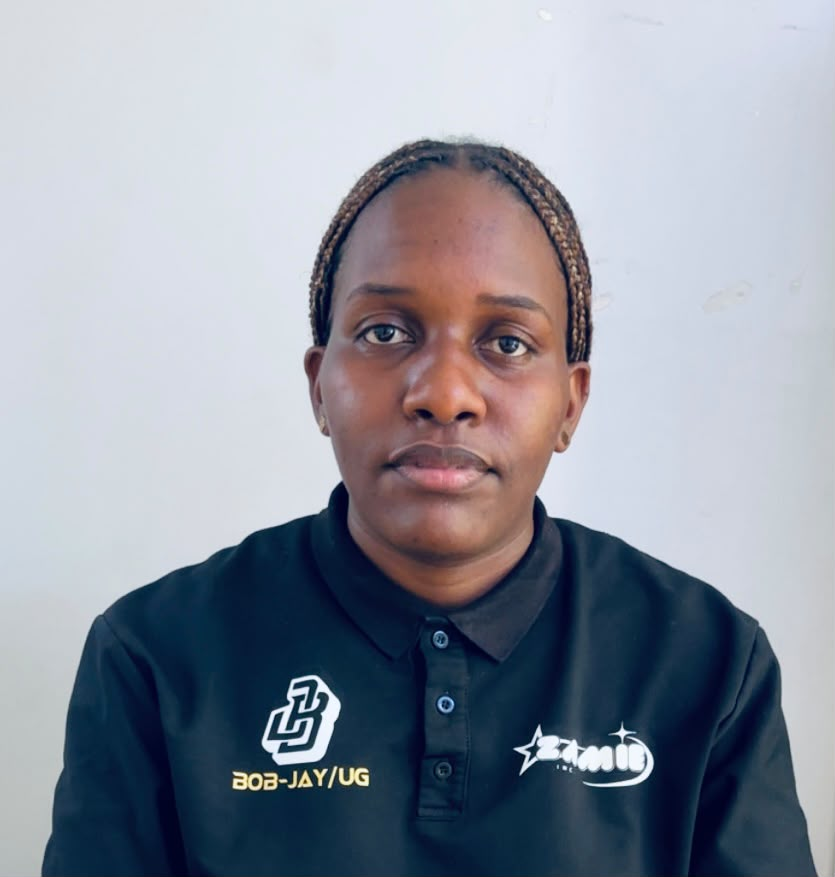

Dependence
Relying on others for basic digital tasks.
DIGITAL INCLUSION • KAMPALA, UGANDA
Building practical digital skills and confidence so people can participate in the digital world independently, safely and with purpose.
WHY WE EXIST
Having a smartphone, computer or internet connection does not automatically mean someone can use digital tools independently.
People can struggle with everyday tasks such as creating an email account, preparing a document or presentation, sharing files, connecting to the internet, recognising scams, or protecting passwords and personal information.
Digital Independence Initiative responds to that gap with practical, hands-on learning designed around real-life needs.
THE JOURNEY
Relying on others for basic digital tasks.
Learning practical skills through doing.
Knowing what to do and where to look when stuck.
Using digital tools safely, confidently and without unnecessary dependence.
OUR FOUR PILLARS
Foundational skills: devices, files, keyboards, documents and basic digital workflows.
Email, cloud storage, online platforms and digital collaboration tools.
Documents, presentations and useful digital content for school, work and community.
Scams, stronger passwords, personal data and safer online behaviour.
HOW THE PROGRAMME WORKS
01 Assess. Understand existing skills and everyday needs.
02 Practise. Learn through guided, hands-on activities.
03 Apply. Complete realistic tasks independently.
04 Measure. Track progress through simple practical checks.
WHO WE SERVE
Building skills before higher education and independent digital life.
Digital competencies for study, collaboration and opportunity.
Practical skills for communication, work, learning and safer participation.
Open to everyone, with deliberate attention to accessibility and participation of persons with physical disabilities.
WHAT SUCCESS LOOKS LIKE
We aim to measure practical change, not just attendance.
OUR LEADERSHIP & PROGRAMME TEAM
Led by volunteers committed to practical learning, inclusion and community impact.
Founder & Project Lead

Leadership & Wellbeing Lead
Leadership & Inclusion Coordinator
Senior IT & Technical Lead
Operations & Support Coordinator
Communications & Media Lead
Digital Skills & Motivation Lead
Digital Foundations Trainer
Digital Skills Trainer
SUPPORTED BY


GET INVOLVED
We welcome conversations with schools, universities, community organisations, volunteers and others who want to support practical digital inclusion.